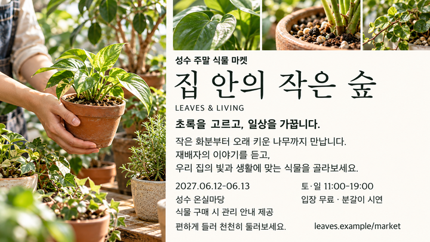
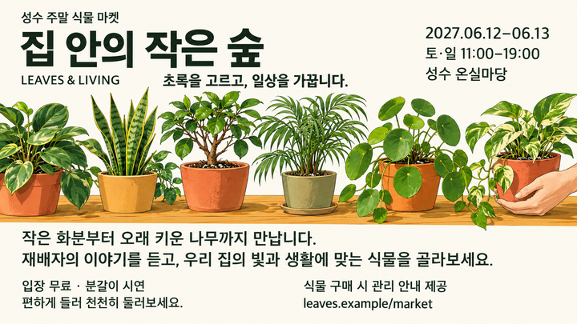
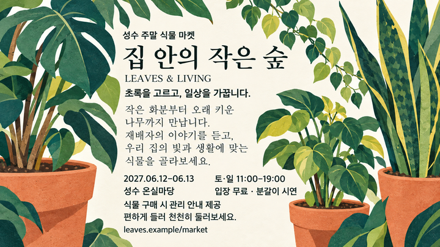
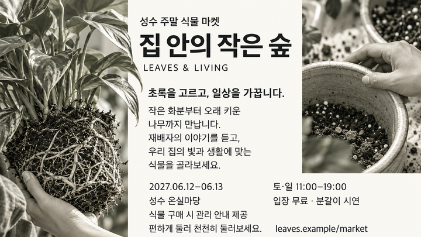
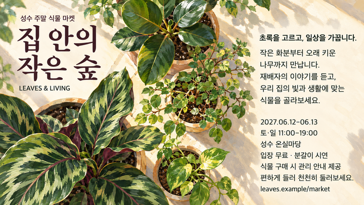

1개 요청 · 서로 다른5개 시안. 보정 전후 원본과 실패 기록을 보존했습니다. 아래는 실제 선택된 결과이며 원본 링크에서 내려받을 수 있습니다. 하이엔드 판정은 독립 평가 결과를 확인해야 합니다. 새20장 캠페인이 아니라 한 요청의 다섯 스타일입니다. 보정본은 새 스타일로 세지 않습니다.

3439aec4ca85ae40ce4e2b8b12f3b132595d63e0a24c65daef6c6d7b39aaeff7
0d97b9c5eb45ff5546a931dae73e1a86a60ab36a77bafea80f127ded701b5bce
ba2caac2c2d0e4850989672770c9e2a5ea25dfcc4a791faa87848429a43fcda5
f935a4693bf35e85c45c772df98effbc54fd3568abee07e7f262a009b49f9ad3
39bb57f74ee3111ee1a85d4a4bdd85447666b773f69f679d6d8473a8066e6f61실제 선택된 원본 5/5. 사진·3D·흑백 등 장르 자체를 AI 슬롭으로 판정하지 않으며, 내용 연결·글자·구조·재질·마감의 관찰 가능한 결함을 평가합니다.